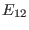
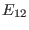
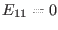
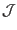
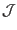
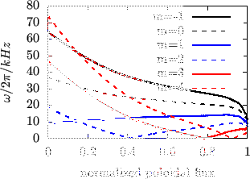

Consider the form of matrix  in the cylindrical geometry limit, in which
the equilibrium quantities are independent of poloidal angle. Equation
(
in the cylindrical geometry limit, in which
the equilibrium quantities are independent of poloidal angle. Equation
(![[*]](crossref.png) ) indicates that the geodesic curvature
) indicates that the geodesic curvature  is zero in
this case. Thus, the matrix elements  and are zero. Next,
consider the matrix elements and
is zero in
this case. Thus, the matrix elements  and are zero. Next,
consider the matrix elements and  . Because all equilibrium
quantities are independent of the poloidal angle, different poloidal harmonics
of the perturbation are decoupled. Therefore, we can consider a perturbation
with a single poloidal mode number . For a poloidal harmonic with poloidal
mode number
. Because all equilibrium
quantities are independent of the poloidal angle, different poloidal harmonics
of the perturbation are decoupled. Therefore, we can consider a perturbation
with a single poloidal mode number . For a poloidal harmonic with poloidal
mode number  , matrix element is written
, matrix element is written
and matrix element is written
The continua are the roots of the equation
, which, in the
cylindrical geometry limit, reduces to
Two branches of the roots of Eq. (218) are given by
 and
, respectively. The equation
is written
which gives
which is the Alfvén branch of the continua. Figure 1a plots
the results of Eq. (220). The equation
is written
which is the sound branch of the continua. Figure 1b plots the
results of Eq. (221).
Figure:
 Alfven continua (left) and sound continua
(right) in the cylindrical geometry limit for
Alfven continua (left) and sound continua
(right) in the cylindrical geometry limit for
 , and
, and  (calculated by using Eqs. (220) and (221)). The
equilibrium used for this calculation is for EAST discharge #38300@3.9s
(G-eqdsk filename g038300.03900, which was provided by Dr. Guoqiang Li). The
number density of ions is given in Fig. 12. Because the Jacobian
 in toroidal geometry depends on the poloidal angle, the
average value of
on a magnetic surface is used in evaluating
the right-hand side of (220).
(calculated by using Eqs. (220) and (221)). The
equilibrium used for this calculation is for EAST discharge #38300@3.9s
(G-eqdsk filename g038300.03900, which was provided by Dr. Guoqiang Li). The
number density of ions is given in Fig. 12. Because the Jacobian
 in toroidal geometry depends on the poloidal angle, the
average value of
on a magnetic surface is used in evaluating
the right-hand side of (220).
|  |
Figures compares the Alfven continua in the cylindrical limit with those in
the toroidal geometry. The results indicate that the Alfven continua in the
toroidal geometry reconnect, forming gaps near the locations where the Alfven
continua in the cylindrical limit intersect each other.
Figure 2:
Comparision of the the Alfven continua in toroidal geometry (black
solid lines) and Alfven continua in the cylindrical limit (other lines). The Alfven continua in toroidal geometry are obtained by using the
slow-sound-approximation. The equilibrium is EAST discharge #38300 at
3.9s.
 |
The result in Eq. (220) is not clear from the view of physics since
it involves the Jacobian, which is a mathematical factor due to the freedom in
the choice of coordinates. Next, we try to write the right-hand side of Eq.
(220) in more physical form. In cylindrical geometry limit, magnetic
surfaces are circular. Thus the radial coordinate can be chosen to be the
geometrical radius of the circular magnetic surface, and the usual poloidal
angle (i.e., equal-arc angle) can be used as the poloidal coordinate. Then the
poloidal magnetic flux is written as
where is the length of the cylinder. We know that used in
the Grad-Shafranov equation is related to by
Using Eqs. (222) and (223), we obtain
Next, we calculate the Jacobian
, which is defined by
Since we choose and
(the positive direction of
 is count clockwise when observers view along the positive direction
of ), the above equation is written
is count clockwise when observers view along the positive direction
of ), the above equation is written
Using Eqs. (224) and (226) ,
is
written
Using these, Eq. (220) is written
Using the definition of safety factor in the cylindrical geometry
equation (228) is written
In the cylindrical geometry, the parallel (to equilibrium magnetic field)
wave-number is given by
Using this, Eq. (230) is written
Using the definition of Alfven speed
, the above equation is written as
which gives the well known Alfven resonance condition. For later use, define
then Eq. (228) is written as
.
Similarly, by using Eq. (227), equation (217) for
is written as
Then equation
reduces to
 |
(235) |
where
,
.
Equation () gives the sound branch of the continua. For present
tokamak plasma parameters, is usually one order smaller than  .
Thus, equation (236) indicates the sound continua are much smaller
than the Alfven continua for the same and
.
Thus, equation (236) indicates the sound continua are much smaller
than the Alfven continua for the same and  .
.
yj
2015-09-04